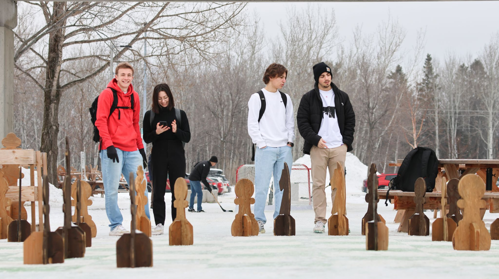

Semestre au Canada
Période : janv. 2026 - avr. 2026
Université du Québec à Chicoutimi (UQAC)

Expérience internationale dans le cadre du BUT Informatique.
Objectif : approfondir les compétences techniques et renforcer l'anglais dans un environnement académique différent.
- Ouverture culturelle et adaptation à un nouveau cadre d'études.
- Développement de l'autonomie et de la communication.